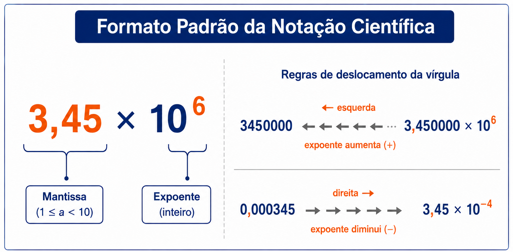

1º Ano | Aula 02: Notação Científica e Ordem de Grandeza
📚 Resumo
A Notação Científica permite escrever números extremamente grandes ou muito pequenos de forma compacta utilizando potências de base 10 no formato $N = a \times 10^n$, onde $1 \le |a| < 10$ e $n \in \mathbb{Z}$.
A Ordem de Grandeza (OG) é a potência de base 10 mais próxima de uma medida física. Compara-se a mantissa $a$ com o ponto de corte geométrico $\sqrt{10} \approx 3,16$ para determinar se o expoente $n$ deve ser mantido ou acrescido em $+1$.
📖 Notação Científica e Ordem de Grandeza
1. Por que usamos a Notação Científica?
Na Física, lidamos frequentemente com números astronômicos ou microscópicos. Escrever e efetuar operações matemáticas com múltiplos zeros inviabiliza o trabalho diário.
A Notação Científica simplifica qualquer número em um produto entre um valor ajustado (mantissa) e uma potência de base dez.
2. Formato Padrão e Regras de Conversão
Todo número escrito em notação científica deve respeitar rigorosamente a seguinte forma:
$$a \times 10^n$$
Mantissa ($a$): Deve ser maior ou igual a 1 e estritamente menor que 10 ($1 \le |a| < 10$).
Expoente ($n$): Número inteiro que indica o deslocamento da vírgula.
Deslocamento para a esquerda: O expoente $n$ aumenta ($+1$ por casa).
Deslocamento para a direita: O expoente $n$ diminui ($-1$ por casa).

Figura 1: Formato padrão da notação científica e regra prática para deslocamento da vírgula.
3. Ordem de Grandeza (OG)
A Ordem de Grandeza é uma estimativa rápida para determinar a potência de base 10 inteira mais próxima de uma medida física.
Como a escala logarítmica é geométrica, o ponto médio entre $10^0 = 1$ e $10^1 = 10$ é a raiz quadrada de 10 ($\sqrt{10} \approx 3,16$). O critério de comparação da mantissa $a$ de $a \times 10^n$ é:
Se $a < 3,16 \implies \text{OG} = 10^n$ (mantém o expoente original).
Se $a \ge 3,16 \implies \text{OG} = 10^{n+1}$ (adiciona $+1$ ao expoente).
💡 Física em Ação
🌌 Escalas Astronômicas
A distância da Terra ao Sol é de cerca de $150.000.000\text{ km}$. Escrever $1,5 \times 10^8\text{ km}$ simplifica operações e evita erros em cálculos orbitais.
🔬 Microeletrônica
Transistores de processadores modernos medem cerca de $0,000000003\text{ m}$. Expressar essa medida como $3 \times 10^{-9}\text{ m}$ facilita a comunicação na engenharia.
✅ 5 Questões Resolvidas (R 1 a 5)
R 1: Conversão para Notação Científica
Enunciado: Escreva em notação científica: a) $450.000.000\text{ m}$ e b) $0,0000072\text{ s}$.
Resolução:
a) Deslocando a vírgula 8 casas para a esquerda: $\mathbf{4,5 \times 10^8\text{ m}}$.
b) Deslocando a vírgula 6 casas para a direita: $\mathbf{7,2 \times 10^{-6}\text{ s}}$.